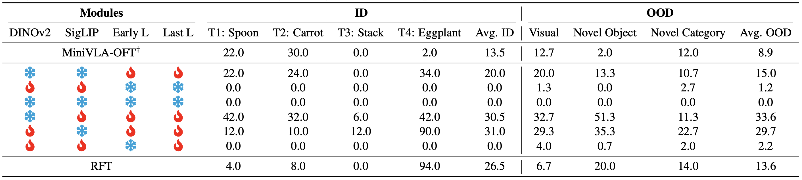
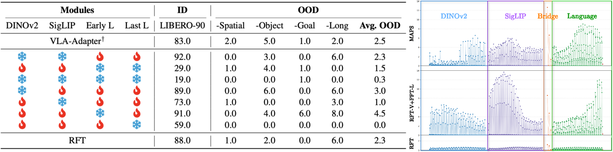
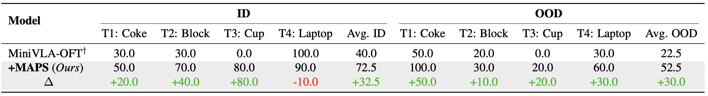
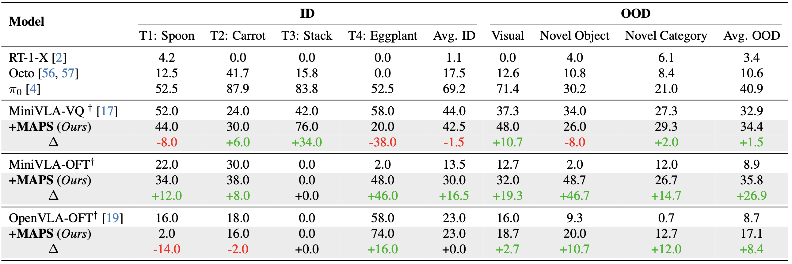
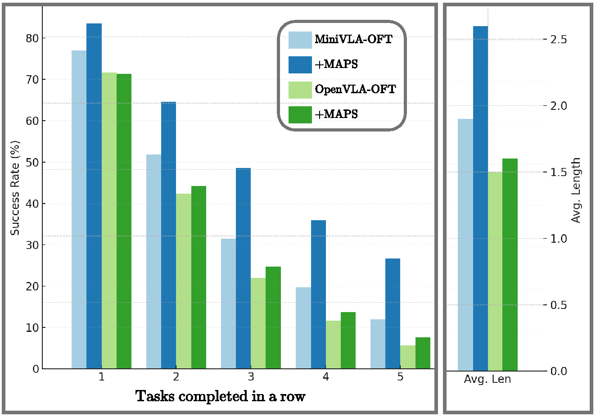
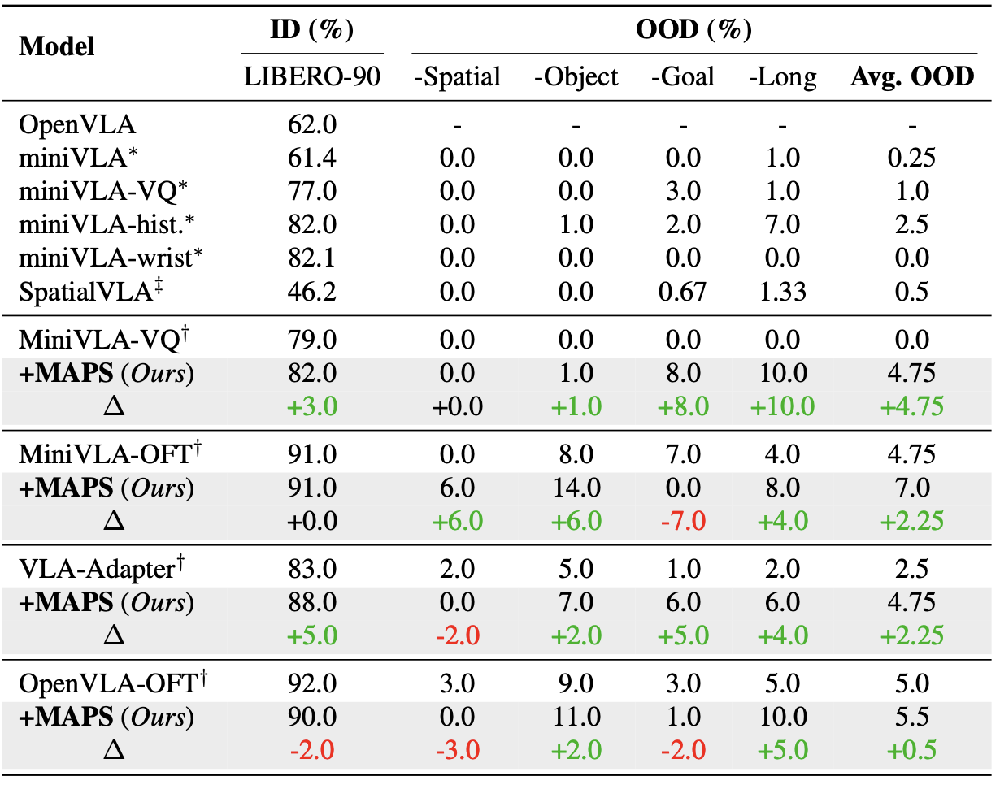

VLA models initialize from powerful VLMs pretrained on web-scale data, leveraging their rich visual and semantic priors before fine-tuning on robotics datasets to learn action policies. However, fine-tuning on sparse, task-specific robot data induces spurious correlations and overfitting, causing catastrophic forgetting of spatial reasoning, world knowledge, and linguistic grounding. The core challenge is balancing the tradeoff between action adaptation and preservation of pretrained generalization.
Freezing visual encoders preserves pretrained perception but limits adaptation. Uniform regularization constrains all layers equally, ignoring the fact that different components encode distinct priors and vary in their sensitivity to fine-tuning. Some modules must stay near their pretrained state to preserve structural knowledge; others require greater flexibility to adapt task-specific grounding.


Through systematic analysis of freezing configurations across DINOv2, SigLIP, early language layers, and late language layers, we identify an empirical hierarchy of how much each component should be preserved:
DINOv2 > SigLIP > Early Language > Late Language
DINOv2 contributes essential depth perception and geometric priors for manipulation. SigLIP provides strong vision-language alignment. Late language layers drive task performance and benefit from more aggressive adaptation to the action space. Freezing any single component in isolation introduces task-dependent inductive biases that degrade performance across benchmarks — freezing alone is not a reliable path to generalization.

MAPS assigns a linearly decaying proximity weight λk = λmax · (1 − (k−1)/(|L|−1)) to each module — strongest for early visual layers (DINOv2, SigLIP) and weakest for the deepest language layers — anchoring pretrained perception while action-oriented language layers adapt more freely. Modules with no pretrained parameters (action head, proprioceptive projector) are assigned λ = 0 and undergo full fine-tuning.
MiniVLA-OFT baseline vs. +MAPS across four tasks, in both ID and OOD settings.
Task 1: Can
In-Distribution
Coke can
Baseline
+ MAPS (Ours)
Out-of-Distribution
Red Bull can (novel object, color & geometry)
Baseline
+ MAPS (Ours)
Task 2: Block
In-Distribution
Stack blue block on green block
Baseline
+ MAPS (Ours)
Out-of-Distribution
Blue block elevated on a third block
Baseline
+ MAPS (Ours)
Task 3: Cup
In-Distribution
Stack orange cup onto green cup
Baseline
+ MAPS (Ours)
Out-of-Distribution
Yellow cup onto blue cup (novel colors)
Baseline
+ MAPS (Ours)
Task 4: Laptop
In-Distribution
Close Alienware laptop
Baseline
+ MAPS (Ours)
Out-of-Distribution
MacBook (novel class, shape & joint stiffness)
Baseline
+ MAPS (Ours)

Franka Emika Panda. MAPS boosts ID success 40%→72.5% and OOD 22.5%→52.5% across four tasks (can, block, cup, laptop).

SimplerEnv (BridgeData V2). MAPS matches ID performance while improving OOD generalization by up to 20% on MiniVLA-OFT, surpassing RT-1-X, Octo, and π₀ on OOD tasks.


CALVIN ABC→D. MAPS improves average sequence length by +0.7 (MiniVLA-OFT) / +0.1 (OpenVLA-OFT). LIBERO. With no external VLA pretraining, MAPS delivers consistent OOD gains of 1–10% across all four backbones on unseen task splits.
@inproceedings{huang2026maps,
title = {{MAPS}: Preserving Vision-Language Representations via Module-Wise Proximity Scheduling for Better {VLA} Generalization},
author = {Huang, Chengyue and Zhang, Mellon M. and Azarcon, Robert and Chou, Glen and Kira, Zsolt},
booktitle = {Proceedings of the IEEE/CVF Conference on Computer Vision and Pattern Recognition (CVPR)},
year = {2026},
}